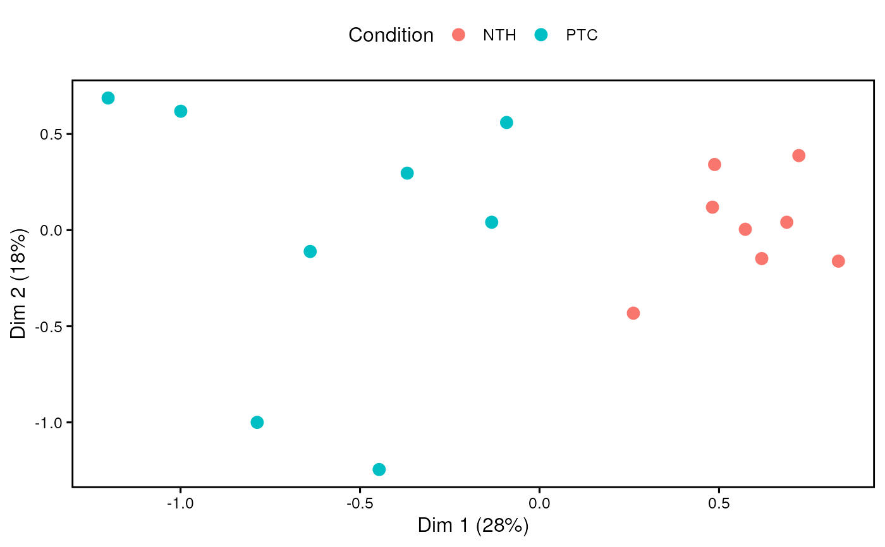
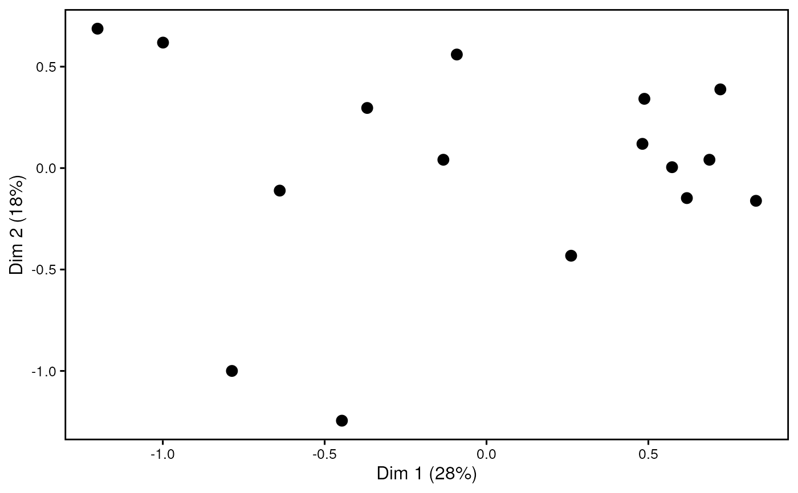

R/visualization.R
plotDimensions.RdThis function performs multidimensional scaling in order to produce a simple
scatterplot that shows miRNA/gene expression variations among samples. In
particular, starting from a MirnaExperiment
object, this functions allows to visualize both miRNA and gene expression in
the multidimensional space. Moreover, it is possible to color samples on the
basis of specific variables, and this is extremely useful to assess
miRNA/gene expression variations between distinct biological groups.
plotDimensions(
mirnaObj,
assay,
condition = NULL,
dimensions = c(1, 2),
labels = FALSE,
boxedLabel = TRUE,
pointSize = 3,
pointAlpha = 1,
colorScale = NULL,
title = NULL,
fontSize = 12,
fontFamily = "",
legend = "top",
borderWidth = 1,
allBorders = TRUE,
grid = FALSE,
...
)A MirnaExperiment object
containing miRNA and gene data
The results to display. It must be either 'microRNA', to plot miRNA expression, or 'genes', to produce MDS plot for genes
It must be the column name of a variable specified in the
metadata (colData) of a MirnaExperiment object;
or, alternatively, it must be a character/factor object that specifies
group memberships (eg. c("healthy, "healthy", "disease", "disease"))
It is a numeric vector of length 2 that indicates the two
dimensions to represent on the plot. Default is c(1, 2) to plot the two
dimensions that account for the highest portion of variability
Logical, whether to display labels or not. Default is FALSE
Logical, whether to show labels inside a rectangular shape (default) or just as text elements
The size of points in the MDS plot (default is 3)
The transparency of points in the MDS plot (default is 1)
It must be a named character vector where values
correspond to R colors, while names coincide with the groups specified in
the condition parameter (eg. c("healthy" = "green", "disease" = "red")).
Default is NULL, in order to use the default color scale. Available color
formats include color names, such as 'blue' and 'red', and hexadecimal
colors specified as #RRGGBB
The title of the plot. Default is NULL not to include a plot
title
The base size for text elements within the plot. Default is 12
The base family for text elements within the plot
The position of the legend. Allowed values are top,
bottom, right, left and none. The default setting is top to show
a legend above the plot. If none is specified, the legend will not be
included in the graph.
The width of plot borders (default is 1)
Logical, whetether to show all panel borders, or just the bottom and left borders. Default is TRUE
Logical, whether to show grid lines or not. Default is FALSE
Other parameters that can be passed to limma::plotMDS() function
An object of class ggplot containing the plot.
To perform multidimensional scaling, this function internally uses
limma::plotMDS() function provided by limma package.
Ritchie ME, Phipson B, Wu D, Hu Y, Law CW, Shi W, Smyth GK (2015). “limma powers differential expression analyses for RNA-sequencing and microarray studies.” Nucleic Acids Research, 43(7), e47. doi:10.1093/nar/gkv007.
# load example MirnaExperiment object
obj <- loadExamples()
# produce MDS plot for miRNA expression with labels
plotDimensions(obj, "microRNA", condition = "disease", labels = TRUE)

# produce MDS plot for genes without condition color
plotDimensions(obj, "genes")
